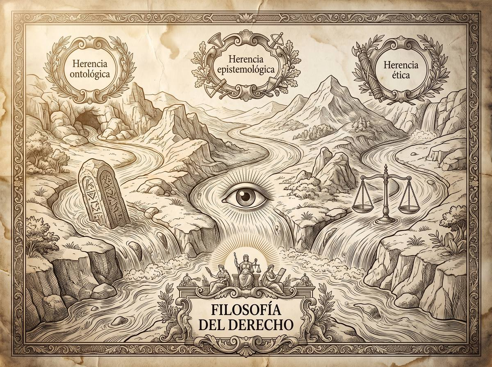
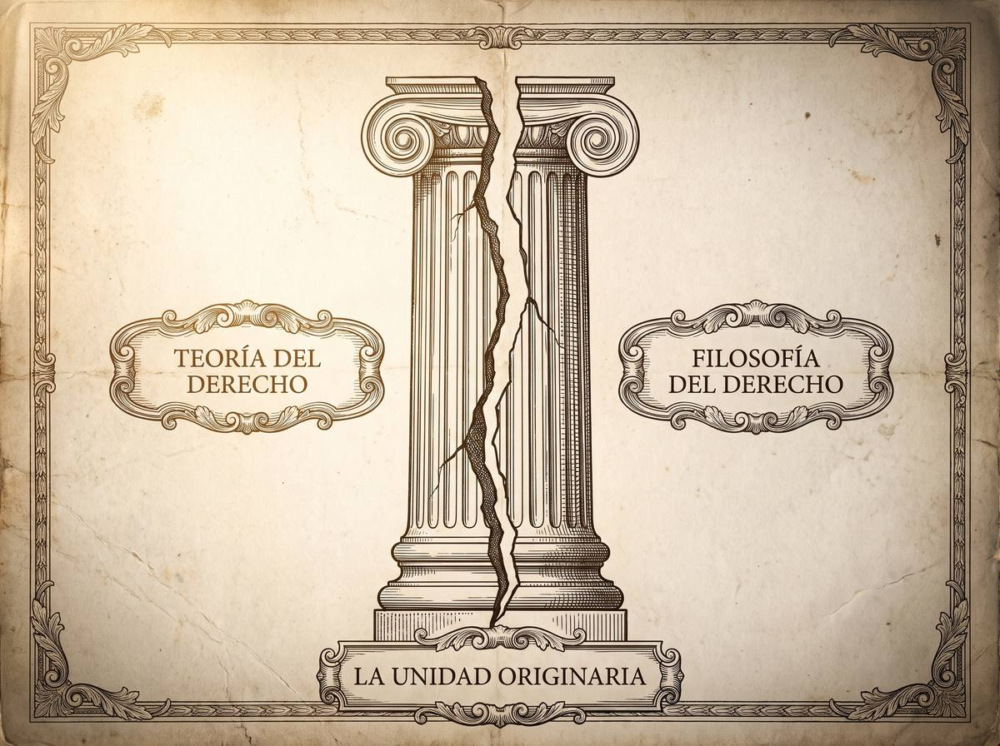

Subpuntos 1.1.5 y 1.1.6 · Ubicación de la disciplina y su relación con la ciencia del Derecho
¿Es ciencia lo que estudian los juristas?
La pregunta incomoda porque no tiene respuesta pacífica. Unos sostienen que la dogmática jurídica es ciencia con todas las de la ley, siempre que no se la mida con la vara de la física. Otros responden que es una técnica útil que se disfraza de ciencia. Y hay quien va más lejos: sostiene que la propia separación entre teoría y filosofía del derecho fue un invento ideológico para blindar la técnica frente a la crítica moral.
Prof. Carlos Eduardo Chica-Villacís Docente autor · Universidad Católica de Cuenca
La filosofía del derecho no es un saber aislado que se inventó a sí mismo. Alexy sostiene que incorpora los problemas de la filosofía general y los aplica al fenómeno jurídico. De ahí que herede su estructura en tres frentes, y que cada uno traiga consigo una pregunta que la filosofía llevaba siglos haciéndose.

La ontología jurídica estudia el ser del derecho: qué clase de entidades lo componen y cómo se estructuran para formar un sistema. Hereda de la ontología general la pregunta por lo que existe. El caso de manual es la disputa entre Kelsen, que concibe las normas como entidades ideales —significados puros del deber ser—, y Olivecrona, que las considera hechos físicos y psicológicos que actúan como causas de la conducta de los jueces.
La epistemología jurídica estudia los métodos, las condiciones de verdad y la justificación del conocimiento sobre el derecho. Hereda la pregunta por cómo es posible conocer. Se aplica, por ejemplo, al preguntar si la reconstrucción que hace un juez de un hecho delictivo a partir de pruebas es conocimiento objetivo de la verdad o una hipótesis sujeta a grados de probabilidad.
La ética jurídica —o axiología— estudia los fines, los valores y la justificación moral de normas y decisiones. Hereda la pregunta por lo que debe hacerse. Su caso límite es la fórmula de Radbruch: las normas positivas pierden validez jurídica cuando su injusticia se vuelve insoportable.
Apartado elaborado a partir de Alexy (2003).Conviene empezar por definir de qué hablamos. La dogmática jurídica se ocupa de exponer, interpretar y sistematizar el derecho positivo vigente en un lugar y un momento, para facilitar su aplicación práctica.
El ataque clásico a su cientificidad viene de una conferencia de 1847 del fiscal prusiano Von Kirchmann, titulada sin rodeos La jurisprudencia no es ciencia. Su argumento tiene una frase que se cita todavía: tres palabras rectificadoras del legislador convierten bibliotecas enteras en basura. El objeto cambia demasiado rápido, no hay progreso acumulativo, y no sirve para formular leyes universales.
Fuertes-Planas Aleix responde que la dogmática sí tiene estatuto científico, pero con una advertencia decisiva: eso depende del concepto de ciencia que se adopte, y no hay razón para reducirlo al modelo empírico de las ciencias naturales. Sostiene su respuesta en tres criterios.
Exponiendo a las escuelas neokantianas de Windelband y Rickert, distingue entre ciencias nomotéticas —generalizadoras, que formulan leyes causales— y ciencias idiográficas, que se ocupan de hechos culturales singulares. La dogmática pertenece al segundo grupo: es comprensiva porque busca el sentido de los textos y no causas físicas; individualizadora porque estudia ordenamientos concretos; cultural porque su objeto lo creó el ser humano; y valorativa porque juzga conductas con referencia a la justicia.
Apoyándose en Popper: aunque las interpretaciones dogmáticas no se puedan verificar empíricamente, son científicas porque pueden refutarse mediante argumentación racional y crítica del sistema de fuentes.
La verdad de las proposiciones dogmáticas no está en corresponder con un objeto inmutable, sino en la justificabilidad discursiva de sus argumentos. Así entendida, la dogmática es una teoría de la argumentación jurídica cuyo rigor procede de cumplir reglas racionales en el diálogo forense.
Antes de entrar, dos definiciones. La teoría del derecho estudia de forma abstracta y presuntamente neutra los materiales normativos comunes a cualquier sistema: norma, sanción, validez. La filosofía del derecho reflexiona desde fuera sobre los fundamentos éticos y de justicia del fenómeno jurídico.
Chazal sostiene que separarlas tajantemente no responde a ninguna división natural del saber, sino que es un producto histórico de la ideología positivista. Y lo reconstruye en tres tiempos.

En el pensamiento romano y medieval, filosofía y técnica jurídica eran inseparables. Ulpiano definía la jurisprudencia como veram philosophiam, la verdadera filosofía, y concebía el derecho como el ars boni et aequi, el arte de lo bueno y lo equitativo. La destreza técnica y el juicio moral iban juntos.
Chazal sitúa el corte en Kant, que dividió la pregunta por qué es el derecho en sí —reservada a los filósofos— de la pregunta por qué establece la ley positiva en un caso concreto, reservada a los juristas. De ahí la escuela de la exégesis y el legalismo decimonónico, que redujeron el trabajo del jurista a describir códigos y desterraron el juicio de valor.
En el siglo XX, bajo el influjo del empirismo lógico, Kelsen forjó la Teoría pura del derecho para oponerse expresamente a la filosofía del derecho, a la que tachaba de metafísica. Adoptó el no cognitivismo ético —los valores morales no se pueden conocer racionalmente— y el dogma de la neutralidad axiológica: describir el derecho que es, sin valorar su justicia.
Y ahí está la denuncia de Chazal: esa neutralidad es una ilusión. Es lógicamente imposible describir una norma sin interpretarla, y toda interpretación jurídica es un acto valorativo. El derecho no es una ciencia deductiva de objetos inmutables sino una ciencia práctica, orientada a la acción, emparentada con la virtud clásica de la prudencia. La escisión habría servido, en el fondo, para blindar la técnica legal frente a la crítica moral.
Apartado elaborado a partir de Chazal (2012).| Filosofía del derecho | Teoría del derecho | Dogmática jurídica | |
|---|---|---|---|
| Objeto | Los saberes jurídicos en su totalidad —dogmáticas particulares, teoría general, prácticas forenses—, evaluados en su dimensión ideal. | Los materiales normativos universales y la estructura lógica común a cualquier ordenamiento positivo. | Un sistema jurídico nacional con vigencia temporal y espacial concreta. |
| Método | Totalizador, dialéctico y crítico, desde una perspectiva externa al derecho aplicable. | Análisis formal y conceptual, con pretensión de neutralidad axiológica y separación entre hecho y valor. | Interpretativo, sistemático y argumentativo, desde el punto de vista interno del participante. |
| Pregunta | ¿Bajo qué condiciones se justifica moralmente el poder coactivo del derecho? | ¿Qué propiedades formales definen la estructura de un sistema normativo? | ¿Cómo debe interpretarse la ley vigente para resolver este litigio? |
¿La certeza del derecho exige aislar conceptualmente las normas de la moral, como pretenden Kelsen y en parte Alexy? ¿O esa neutralidad es una ilusión que desnaturaliza lo que el derecho realmente es, como sostienen Chazal y Fuertes-Planas?
Desde el aula
«Este apartado suele generar cierta incomodidad, y con razón. Acaban de entrar a una carrera y lo primero que les decimos es que no está claro si lo que van a estudiar es una ciencia. Quiero explicarles por qué eso no es una mala noticia.
Fíjense en lo que hace Fuertes-Planas. No responde «sí es ciencia» sin más: responde que depende de qué entendamos por ciencia, y que medir el derecho con la vara de la física es un error de categoría. Eso es exactamente el tipo de movimiento intelectual que van a necesitar toda la carrera — antes de discutir si algo cumple un criterio, pregúntense si el criterio es el adecuado.
Y luego está Chazal, que es el más incómodo de los tres. Su tesis es que la separación entre la técnica jurídica y la reflexión sobre la justicia no fue un descubrimiento sino una decisión, y que sirvió para proteger a los juristas de tener que responder por las consecuencias morales de lo que hacen. No hace falta que estén de acuerdo. Pero cuando alguien les diga que el derecho es una cosa y la moral es otra, y que eso es simplemente así, recuerden que hubo un siglo en que nadie lo veía de ese modo.»